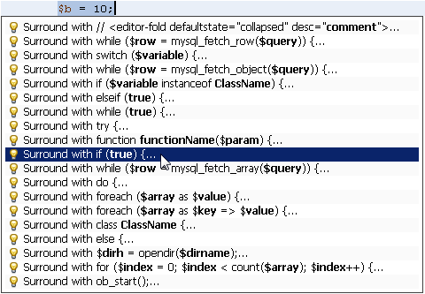
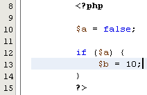
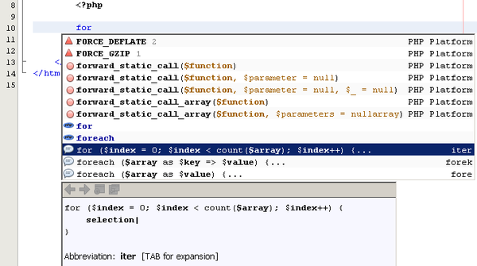
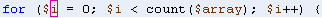
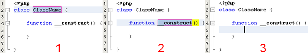
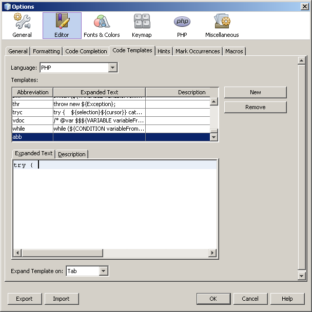

Apache NetBeans
Apache NetBeansLatest release
PHP向けのNetBeans IDEのコード・テンプレート
| This tutorial needs a review. You can open a JIRA issue, or edit it in GitHub following these contribution guidelines. |
コード・テンプレートは、NetBeans IDEによって提供される記述済のコード・スニペットです。コード補完を使用するか、またはテンプレートの省略名に続けて[Tab]キーを押すことによって、スニペットを自分のコードに貼り付けることができます。適切なPHPスニペットでコードを囲むこともできます。さらに、独自のコード・テンプレートも定義できます。このチュートリアルでは、コード・テンプレートの使用方法を解説し、独自のコード・スニペットを定義するために役立つケースを紹介します。
このチュートリアルを完了するには、次のソフトウェアとリソースが必要です。
| ソフトウェアまたはリソース | 必須バージョン |
|---|---|
PHPダウンロード・バンドル |
|
7または8 |
定義済のPHPコード・テンプレート
NetBeansで定義されているコード・テンプレートを表示するには、「ツール」>「オプション」(Macの場合は「NetBeans」>「プリファレンス」)を開き、「エディタ」機能を選択し、「コード・テンプレート」タブを選択します。PHPのコード・テンプレートを表示するには、「言語」ドロップダウン・リストで「PHP」を選択します。コード・テンプレートの省略名と展開されるテキストの表が表示されます。表でコード・テンプレートを選択すると、その展開されるテキストが「展開されるテキスト」タブに表示されます。

このイメージでは、新規クラス( cls )コード・テンプレートが選択され、「展開されるテキスト」タブにはテンプレートが展開されたときの内容が表示されています。次の項では、Tab機能を使用してコード内でこのテンプレートを展開します。
新規クラス( cls )コード・テンプレートの構文については、PHPコード・テンプレートの構文の項で説明します。
|
PHPコード・テンプレートの使用方法
PHPコードにコード・テンプレートを挿入する方法は3つあります。どの方法でコード・テンプレートを挿入するが適切かは、状況によって異なります。コード・テンプレートの挿入方法は次の3つです。
-
テンプレートの省略名と[Tab]キー(または、独自に定義する別のキーまたはキーの組合せ)を使用してテンプレートを展開する。
-
コード補完を使用して展開されたテンプレートを挿入する。
-
マージン・ヒントまたは[Alt]-[Enter]を使用して、テンプレートでコードを囲む。
テンプレートを挿入した後に、IDEでは、展開されたテンプレート・コード内のパラメータを編集できます。
省略名と[Tab]を使用したコード・テンプレートの展開
「オプション」ダイアログの「コード・テンプレート」タブをもう一度見てみます。最下部に、キーの組合せを選択するための「テンプレートを展開」ドロップダウン・フィールドがあります。これは、コード・テンプレートを展開するために、コード・テンプレートの省略名を入力した後に押すキーの組合せです。デフォルトでは[Tab]キーが選択されていますが、かわりに他の組合せも選択できます。

この項ではこれ以降、「テンプレートを展開」フィールドでデフォルトの「[Tab]」キーが選択されていると仮定します。
テンプレートの省略名がコード補完のキーワードの一部でもあるときに、省略名を展開することが難しい場合があります。このような場合、コード補完を使用してテンプレートを挿入するほうが簡単です。
省略名と[Tab]を使用して新規クラス・コード・テンプレートを展開する
-
空のPHPファイルを作成します。
-
そのファイルのPHPブロックで、「
cls」と入力して[Tab]を押します。clsコード・テンプレートが展開されます。
| 省略名のスペルを間違えないようにしてください。省略名のスペルが間違っていると展開は機能しません。 |

-
プレースホルダのクラス名(
class_name)が自動的に選択されます。[Tab]を押して、プレースホルダ間を移動できます。クラスに付ける名前をここで入力でき、入力した名前によってプレースホルダが上書きされます。終了して[Enter]を押すと、最初の関数(この場合はコンストラクタ)の名前がIDEで選択されます。
| プレースホルダ名についてはプレースホルダ名の項で詳しく説明します。 |

-
関数名を編集するか、またはデフォルトの名前をそのまま使用します。もう一度[Enter]を押すと、カーソルが関数本体の内部に移動します。実際には、ここで関数およびクラスの残り部分のコーディングを開始します。
カーソルの最終位置は ${cursor} パラメータによって決定されます。このパラメータについては予約名の項で説明します。
コード補完によるコード・テンプレートの挿入
コード補完を使用してコード・テンプレートを挿入するには、テンプレートの省略名_ではなく_、展開されるスニペットの先頭部分を入力します。コード補完ダイアログが開き、スニペットが表示されます。
コード補完を使用して新規クラス・コード・テンプレートを挿入する
-
PHPファイルのPHPブロックで、「
cla」と入力します。 -
コード補完ダイアログが表示されるまで待ちます。
-
省略名(
cls)とともに一覧表示される新規クラス・テンプレートを探します。PHPDocフレームには展開されたテンプレートが表示されます。

-
新規クラス・テンプレートを選択し、[Enter]キーを押します。IDEによって、コードに挿入されます。
-
プレースホルダのクラス名(
class_name)が自動的に選択されます。[Tab]を押して、プレースホルダ間を移動できます。クラスに付ける名前をここで入力でき、入力した名前によってプレースホルダが上書きされます。終了して[Enter]を押すと、最初の関数(この場合はコンストラクタ)の名前がIDEで選択されます。
-
関数名を編集するか、またはデフォルトの名前をそのまま使用します。もう一度[Enter]を押すと、カーソルが関数本体の内部に移動します。実際には、ここで関数およびクラスの残り部分のコーディングを開始します。
テンプレートでコードを囲む
次のPHPテンプレートでコードを囲むことができます。
-
while -
do -
switch -
if/elseif -
tryとcatch -
foreach -
for -
ob_startとob_end_clean
また、テンプレートに`allowSurround`パラメータ・ヒントが含まれている場合にコードを囲む新しいテンプレートを作成できます。(My Beloved PHPブログに感謝します。)
テンプレートでコードを囲むには、コードを選択して「囲む」ダイアログを開きます。「囲む」ダイアログを開くには、[Alt]-[Enter]を押すか、またはヒント  ・アイコンをクリックします。
・アイコンをクリックします。
if(true)テンプレートでコードを囲む
-
変数
$a=trueおよび$b=10を含むPHPブロックを作成します。
<?php$a = false;$b = 10;?>-
「
$b = 10;」行を選択します。

-
ヒント
 ・アイコンをクリックするか、[Alt]-[Enter]を押します。「囲む」ダイアログが開きます。
・アイコンをクリックするか、[Alt]-[Enter]を押します。「囲む」ダイアログが開きます。

-
「
Surround with if{true){…」をクリックします。

-
IDEで、「
$b=10;」行が「if(true){…」テンプレートで囲まれます。

IDEでは自動的に、出現済で最も近い位置にある適切な変数が if 文の条件として挿入されます。 $a はブール型であり、 if(true){} 文はその条件としてブール型の変数を取るため、この場合の該当する変数は $a です。また、IDEで条件に挿入された変数が正しい変数でない場合、その条件が自動的に編集のために選択されます。つまり、テンプレートが挿入された後、すぐに正しい変数の入力を開始できます。この場合、コード補完が正しい変数の選択に役立つことがあります。
if(true){} テンプレートについては、ヒントによって定義されるパラメータの項で詳しく説明します。
|

[Enter]を押して文の条件を終了します。カーソルが適切な位置(この場合は「 $b=10; 」行の末尾)に移動します。条件を編集して[Enter]を押すか、または自動挿入された条件を受け入れて[Enter]を押すことができます。どちらの場合でも、カーソルは条件から適切な位置に移動します。


次の項では、展開されたテンプレート内のパラメータの編集について詳しく説明します。
展開されたテンプレート内のパラメータの編集
コードへのテンプレートの挿入に関する項では、新規クラス・テンプレートの展開時にIDEでクラス名が編集のために自動選択されることと、 if(true) テンプレートの展開時にIDEで条件名が編集のために自動選択されることを示しました。ここでは、展開されたテンプレート内のパラメータの編集を補助するIDEの機能について説明します。
パラメータの複数のインスタンスを同時に編集する
-
空のPHPブロックで「
for」と入力し、[Ctrl]-[Space]を押してコード補完を開きます。繰返し処理テンプレート(省略名iter)を選択して[Enter]を押します。新しい繰返し処理がコードに挿入されます。

-
繰返し処理には、パラメータとして
$indexおよび$arrayの2つの変数があります。$indexが編集のために自動的に選択されます。([Tab]を押すと、パラメータ間を移動します。)

「 i 」と入力します。 $index の3つのインスタンスがすべて $i に変更されます。

-
[Enter]または[Tab]を押します。パラメータ
$arrayが選択されます。 -
[Enter]を押します。カーソルが繰返し処理のメソッド本体に移動します。
NetBeansの変数名リファクタリング機能では、変数の1つのインスタンスを編集することにより、その変数のすべてのインスタンスを変更できます。これがテンプレートのパラメータに適用されると役に立つことがわかります。
NetBeans IDEのPHPエディタは、変数に対する正しいメソッドを識別するのにも役立ちます。
テンプレート内の変数を正しいメソッドと関連付ける
-
空のPHPブロックで、次のコードを入力します。
<?php$arr = array(new ArrayIterator($array()), new ArrayObject($array()));?>-
$arr配列を宣言する行の後に「fore」と入力し、コード補完を使用してforeachテンプレート(省略名fore)を挿入します。

-
([Enter]を2回押すか、またはカーソルを移動して)
foreach関数の本体にカーソルを置き、「$value」と入力するか、または「$」とのみ入力してコード補完から「$value」を選択します。
<?php$arr = array(new ArrayIterator($array()), new ArrayObject($array()));foreach ($arr as $value) {$value}?>-
「
$value」に続けて「→」と入力します。コード補完により、配列$arrから派生した$value変数に対する適切なメソッドが提示されます。

PHPコード・テンプレートの構文
NetBeans IDEは、IDEがサポートするすべての言語のコード・テンプレートを提供します。一部の構文はすべての言語に共通です。その他の構文は言語ごとに固有です。この項では、最もよく使用される一般的なテンプレート構文と、PHPテンプレートに固有の構文について説明します。
PHPコード・テンプレートには、PHPコードとテンプレート・パラメータを含めることができます。PHPテンプレートは、PHPコードのみ、パラメータのみ、またはコードとパラメータの両方で構成できます。
コード・テンプレート・パラメータの構文では、ドル記号 $ に続けてパラメータの定義を中括弧 {…} で囲みます。この構文の内部で、テンプレート・パラメータの形式は次の4つのいずれかです。
-
${SomeName}などの任意のプレースホルダ名 -
IDEに処理指示を与える予約名
-
パラメータの記述名と、一連のパラメータを定義するヒント
後続の各項では、コード・テンプレート・パラメータの各形式について説明します。
${VARIABLE...}`` PHPコード・テンプレートの構文が、 ``${…} のように3つのドル記号に中括弧が続く形式になっている場合があります。この場合、コード・テンプレートには変数とその名前が含まれています。ここで示す構文では、エスケープされたドル記号(二重のドル記号 `` として記述される)に、変数名に対応するパラメータ ``${VARIABLE...}`` を続いています。たとえば、コード・テンプレート「 ``catch${Exception}${exc} 」は「[examplecode]# catch Exception$exc #」に展開されます。
|
プレースホルダ名
最も単純なケースでは、コード・テンプレート・パラメータは任意のプレースホルダ値です。テンプレートが展開されると、IDEでこのプレースホルダ名が編集のために選択されます。
たとえば、このチュートリアルの定義済PHPテンプレートおよび省略名と[Tab]を使用したコード・テンプレートの展開の各項で示した新規クラス・テンプレート( cls )を考えます。新規クラス・テンプレートの展開されたテキストは「 class${className} 」で始まります。ここで、単語 class はPHPコードであり、 ${className} はパラメータです。このパラメータは単に、クラスの名前の任意のプレースホルダ値です。IDEでテンプレートが展開されると、 ${className} は class_name になります。IDEは class_name を単なるプレースホルダ値と認識し、編集のためにこの値を自動的に選択します。
予約名
IDEでは、処理指示として使用される2つのパラメータ名が予約されています。
-
${cursor}は、展開されたテンプレート内で自動選択されたすべての値の編集を終了した後のカーソルの位置を定義します。 -
${selection}は、エディタの選択内容を貼り付ける位置を定義します。これは、ユーザーがエディタでテキストを選択するたびにヒントとして表示される「選択テンプレート」によって使用されます。テンプレートに${selection}が含まれる場合、これは通常、${cursor}と同じ位置を参照します。
たとえば、このチュートリアルの定義済PHPテンプレートおよび省略名と[Tab]を使用したコード・テンプレートの展開の各項で示した新規クラス・テンプレート( cls )について再度考えてみます。 ${ClassName} および $__construct という2つのプレースホルダ名パラメータが含まれています。関数本体には、 ${cursor} および ${selection} というパラメータが含まれています。
class ${ClassName} {function ${__construct} {${selection}${cursor}}}テンプレートが展開された後に、プレースホルダ class_name が自動的に選択されます(1)。[Enter]を押すと、プレースホルダ __construct が自動的に選択されます(2)。他に編集する値はありません。もう一度[Enter]を押すと、テンプレートのテキストで ${cursor} によって指示される位置にカーソルが移動します(3)。

ヒントによって定義されるパラメータ
パラメータは、すべて大文字の任意の記述名と1つ以上のヒントで構成できます。
${PARAMETER_NAME hint1[=value] [hint2...hint n]}名前はコード内のどこにも出現しません。ただし、これは、コード・テンプレート内でパラメータを2回以上使用する場合に役立ちます。パラメータは初回のみ定義する必要があり、それ以降は名前によってそのパラメータを参照できます。たとえば次のコード・テンプレートで、パラメータ ${CONLINK} は最初に一度のみ定義され、以後の2回はその名前によって参照されます。
$$${CONLINK newVarName default="link"} = mysql_connect('localhost', 'mysql_user', 'mysql_password'); if (!$$${CONLINK}) { die('Could not connect: ' . mysql_error()); } echo 'Connected successfully'; mysql_close($$${CONLINK}); ${cursor}ヒントは、IDEでコード・テンプレートが展開されるときにテンプレート・パラメータの値を計算するために参照されます。たとえば、このチュートリアルのテンプレートでコードを囲むの項で使用される if(true) テンプレートを見てみます。このテンプレートの展開されたテキストは次のとおりです。
if (${CONDITION variableFromPreviousAssignment instanceof="boolean" default="true"}) {${selection}${cursor}}パラメータ ${CONDITION variableFromPreviousAssignment instanceof="boolean" default="true"} に注目してください。このパラメータは if 文の条件を設定します。したがって、パラメータの名前はCONDITIONです。最初のヒントは variableFromPreviousAssignment で、2番目のヒントは instanceof="boolean" です。これら2つのヒントを組み合せて、コード・テンプレートよりも前のコード内で最も近い位置に割り当てられたブール型変数を検出するようにIDEに指示します。3番目のヒント default="true" を追加して、「先に出現する最も近いブール型変数の値がtrueの場合」という条件をパラメータで設定します。
たとえば、次のコード・スニペットの「 $b=10 」の行を if(true) コード・テンプレートで囲みます。
IDEでは、これよりも前の最も近い位置で割り当てられたブール型変数として $a が検出され、 $a [=true]という条件で if 文が生成されます。条件が編集のために自動的に選択されるので、PHPプログラマは $a を別の変数または !$a に変更できます。
次の表は、PHPコード・テンプレートで使用されるヒントの一覧と各ヒントの説明です。
| ヒント | 説明 |
|---|---|
|
パラメータ値は未使用の変数名である必要があります。通常は |
|
パラメータのデフォルト値。 |
|
パラメータで定義されるPHP変数の型。 |
|
パラメータ値は先に割り当てられた最も近い変数です。通常は |
|
パラメータ値はコード・テンプレートよりも後に割り当てられた最も近い変数の名前です。通常は |
|
パラメータ値はコード・テンプレートよりも後に割り当てられた最も近い変数の型です。通常は |
|
テンプレートの展開後にパラメータ値を編集できません。 |
|
テンプレートを使用してコードを囲むことができます。 |
独自のコード・テンプレートの作成
NetBeans IDEで独自のコード・テンプレートを作成できます。この項では、コード・テンプレートの作成方法を説明し、その構文を解説し、作成すると役立ついくつかのテンプレートを提案します。
コード・テンプレートを作成する
-
「ツール」>「オプション」(Macでは「NetBeans」>「プリファレンス」)を開き、「エディタ」機能を選択し、「コード・テンプレート」タブを選択します。
-
「新規」をクリックして、「新規コード・テンプレート」ダイアログ・ボックスを開きます。テンプレートの省略名を入力して「OK」をクリックします。

-
コード・テンプレートの表に新しい行が追加されます。この行の内容は、指定した省略名のみです。IDEで「展開されるテキスト」タブにカーソルが自動的に移動します。テンプレートのコードの入力をすぐに開始できます。
| コード・テンプレートの展開されるテキストの構文については、PHPコード・テンプレートの構文の項を参照してください。 |

後続の各項では、独自のPHPコード・テンプレートを作成するためのユース・ケースをいくつか紹介します。新しく提案するユース・ケースがあれば、PHPユーザー・フォーラムのコミュニティにぜひ投稿してください。
ユース・ケース: HTMLへのPHPの挿入
PHPスニペットを頻繁にHTMLブロックに挿入する場合、 <?php?> を何度も入力せずにPHPを挿入するHTMLコード・テンプレートを作成できます。
次のコード・テンプレートは、PHPの echo 文をHTMLに挿入します。
| 言語: | HTML |
|---|---|
省略名: |
php |
展開されるテキスト: |
[source,php] ---- <?php echo ${cursor} ?> ---- |

ユース・ケース: Joomla
コード・テンプレートは、NetBeans IDEでPHPフレームワーク(特に、サポートが組み込まれていないフレームワーク)を使用する場合に役立ちます。次に示すのは、あるユーザーがJoomlaとともに使用するために開発したコード・テンプレートです。
| 言語: | PHP |
|---|---|
省略名: |
joomdef |
展開されるテキスト: |
[source,php] ---- defined('_JEXEC')or die('Restricted access');${cursor} ---- |

ユース・ケース: MySQL接続
PHP開発者はしばしば、MySQLデータベースへの接続を作成する必要があります。このコード・テンプレートによって作成します。MySQL接続に割り当てられる変数のプレースホルダ名は link です。「三重の」ドル記号 $$$ の使用方法に注意してください。これは、展開すると1つのドル記号になる二重のドル記号に変数名のパラメータを続いています。
| 言語: | PHP |
|---|---|
省略名: |
my_con |
展開されるテキスト: |
[source,php] ---- ${CONLINK newVarName default="link"} = mysql_connect('localhost', 'mysql_user', 'mysql_password'); if (!${CONLINK}) { die('Could not connect: ' . mysql_error()); } echo 'Connected successfully'; mysql_close($$${CONLINK}); ${cursor} ---- |

ユース・ケース: Zendコントローラでのアクション
NetBeansのウィザードを使用してアクションを作成するかわりに、コード・テンプレートを使用して、 indexController{} などのZendフレームワーク・コントローラのアクションを挿入することができます。
| 言語: | PHP |
|---|---|
省略名: |
zf_act |
展開されるテキスト: |
[source,php] ---- public function ${functionName}Action () {${selection}${cursor} } ---- |

ユース・ケース: Zendフォーム要素
このテンプレートはZendフォームに要素を挿入します。これは、Zendの create form <name> コマンドをコールしてフォームを生成した後に使用します。
| 言語: | PHP |
|---|---|
省略名: |
zf_element |
展開されるテキスト: |
[source,php] ---- ${ELEMENT newVarName default="element"} = new Zend_Form_Element_Submit('submit', array('label' => 'Send data to server')); this→addElement($$${ELEMENT}); ${cursor} ---- |

関連項目
netbeans.orgでのPHPテクノロジの詳細は、次のリソースを参照してください。
-
NetBeans IDE Javaエディタでのコード支援。コード・テンプレートやマクロ記録などのNetBeans IDEのコード支援に関するリファレンス・ガイドです。
-
PHP向けのNetBeansブログ。NetBeans PHPエディタの開発者によるブログです。最新の機能や改良点についての情報をいち早く入手できます。
users@php.netbeans.orgメーリング・リストに登録することによって、NetBeans IDE PHP開発機能に関するご意見やご提案を送信したり、サポートを受けたり、最新の開発情報を入手したりできます。